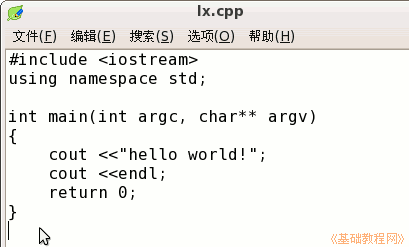
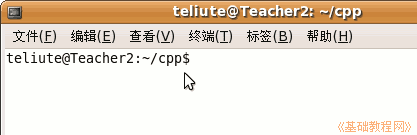
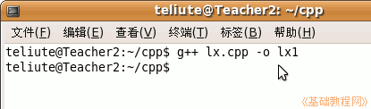
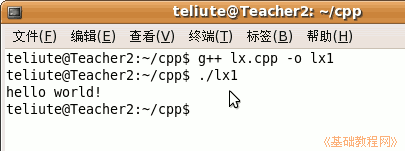
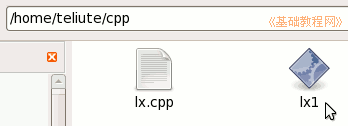

电脑操作基础
作者：TeliuTe 来源：基础教程网
二十七、编译 c++ 源程序 返回目录 下一课c++/c源程序都是纯文本文件，我们可以用 gcc 在终端里编译，下面我们来看一个练习；
1、c++ 源程序
1）创建一个空文件，修改文件名为 lx.cpp ，然后打开输入下面的代码，注意最后花括号后面再加一个回车；
#include <iostream>
2、编译源程序
1）点菜单“应用程序－附件－终端”，打开一个终端窗口，然后进入 lx.cpp 所在的文件夹；

2）输入下面的命令，前面的 g++ 是 gcc 编译器，中间的 lx.cpp 是源程序，后面的 -o lx1 是目标程序名称：
g++ lx.cpp -o lx1

3）如果没有提示，就是顺利完成，如果提示错误，仔细检查一下单词是否写错，
接着输入命令 ./lx1 ，就会显示出一行 “hello world！”；

4）这样一个简单的 hello word程序就编译好了，在当前文件夹里有一个名为 lx1 的可执行文件，
运行的时候记着加上 ./ 当前文件夹；

里面的 cout 是显示命令，显示括号里双引号括起来的文字，下面一行的 endl 是输出一个回车换行，
第二行的 using 一行是使用 std 名字空间，后面的 cout 就不用加 std:: 前缀了；
本节学习了在Ubuntu中编译c++程序的基本操作，如果你成功地完成了练习，请继续学习下一课内容；本教程由86团学校TeliuTe制作|著作权所有
基础教程网：http://teliute.org/
美丽的校园……
转载和引用本站内容，请保留版权信息和本站链接。